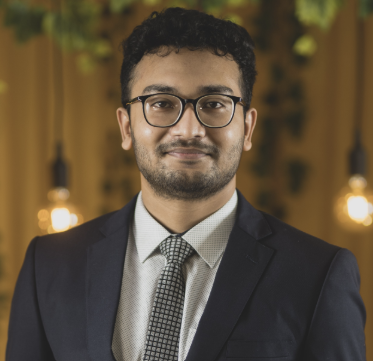

Ali Abir Shuvro
PhD Student in Computer Science
University of Illinois Chicago
Contact: ashuv@uic.edu
About
I am a PhD student in Computer Science at the University of Illinois Chicago, where I work in the EDGES lab advised by Professor Elena Zheleva.
My research lies at the intersection of causal inference, data science, and machine learning. My current work focuses on causal discovery for relational data in networks. I have extended LiNGAM-based methods to settings where entities are connected and influence one another, as in social network graphs. I am currently working on the problem of considering nonlinear mechanisms in the relational settings. More broadly, I am interested in going beyond prediction toward explainability, unlearning, and causality.
Before joining UIC, I spent two years as a Lecturer in the Department of Computer Science and Engineering at the Islamic University of Technology (IUT), teaching courses in algorithms, networks, security, and software engineering. I earned my B.Sc. from IUT as the Gold Medalist of my class.
Interests
- Causal Inference
- Causal Discovery
- Graph Neural Networks
- Time-series Analysis
- Large Language Models
Education
-
PhD in Computer Science (2024 to present) University of Illinois Chicago
-
B.Sc. in Computer Science Islamic University of Technology, Bangladesh Gold Medalist, top of the class
Experience
-
Graduate Research & Teaching Assistant
Aug 2024 to presentUniversity of Illinois Chicago, Department of Computer ScienceWorking with Professor Elena Zheleva in the EDGES lab on causal discovery for relational data in networks.
-
Lecturer
Aug 2022 to Aug 2024Islamic University of Technology, Department of CSETaught Cryptography and Network Security, Computer Networks Lab, Data Structures and Algorithms Lab, Software Project Lab, Compiler Design Lab, Numerical Methods Lab, Bioinformatics Lab, Computer Programming Lab, E-Commerce and Web Security, Engineering Ethics, and Design Project.
-
Contractual Lecturer
Sep 2022 to May 2023Brac University, Department of CSETaught Algorithms Lab, Computer Networks Lab, System Analysis and Design Lab, Robotics Lab, and Compiler Design Lab.
-
Machine Learning Engineer Intern
Apr 2021 to Sep 2021Pioneer Alpha Ltd.Worked with the Vision Research Group on image generation projects using computer vision models.
-
Network Service Management Intern
Feb 2021 to Apr 2021Banglalink Digital CommunicationsStudied the backbone of a national cellular network and worked with Nokia engineers to implement zero-touch configuration on base stations.
Publications
Ongoing research
- Enhanced LiNGAM-based Causal Discovery for Relational Data in Networks. In preparation.
Journal articles
- Time-series multivariate multistep traffic flow forecasting using temporal fusion transformers. International Journal of Intelligent Transportation Systems Research, 2025.
- Zero-shot performance analysis of large language models in sum-rate maximization. PLOS ONE, vol. 20, no. 8, e0329674, 2025.
- Transformer based traffic flow forecasting in SDN-VANET. IEEE Access, vol. 11, pp. 41816–41826, 2023.
Conference proceedings
- Quantum machine learning for anomaly detection in IoT devices. 5th International Conference on AI-ML-Systems (AIMLSystems), 2025.
- Comparison of 4G LTE and 5G NR in UAV networks: A Simu5G-based performance evaluation. IEEE 9th World Forum on Internet of Things (WF-IoT), 2023.
- A deep learning approach for a QoS prediction system in cellular networks. IEEE 9th World Forum on Internet of Things (WF-IoT), 2023.
- Performance analysis of YOLO-based architectures for vehicle detection from traffic images in Bangladesh. 25th International Conference on Computer and Information Technology (ICCIT), 2022, pp. 982–987.
A full, up-to-date list is on Google Scholar.
Honors & Awards
Honors and scholarships
- 2022Gold Medalist, 34th Convocation of Islamic University of Technology
- 2018–22OIC Academic Scholarship, Islamic University of Technology
- 2009Talentpool Scholarship, Primary School Completion Examination
Competitions
- 2022Finalist, Robi Datathon 2.0
- 2021National Finalist, Huawei ICT Competition
- 2021Finalist, Blockchain Olympiad Bangladesh
- 2020Finalist, Dhaka-AI 2020
Service and activities
- 2022–24Advisor, IUT Computer Society
- 2022–24Member, IUT CSE Course Load Distribution Committee
- 2022–23Programming Coach, National Girls' Programming Contest
- 2021–22Vice-Captain, IUT CSE Football Team
Skills
- Programming
- Python, C, C++, Java, R
- Databases
- MySQL, Oracle SQL
- Tools
- VS Code, Google Colab, IntelliJ, Eclipse, LaTeX
- Languages
- English, Bengali
- Other
- Academic research, teaching and training, LaTeX typesetting and publishing
CV
My full CV, including coursework and undergraduate projects.
Download CV (PDF)